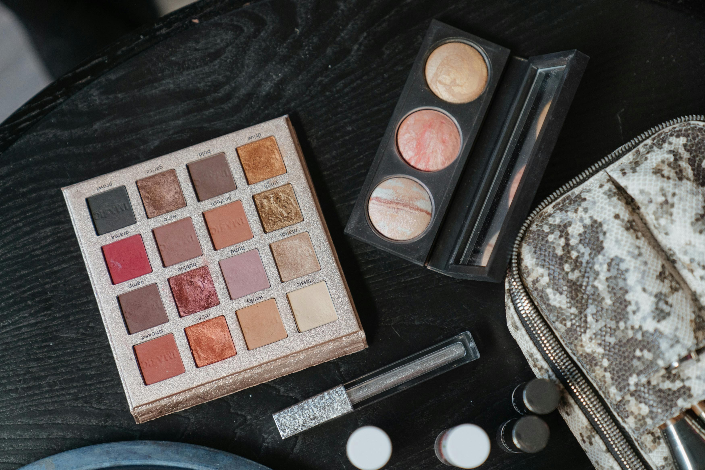
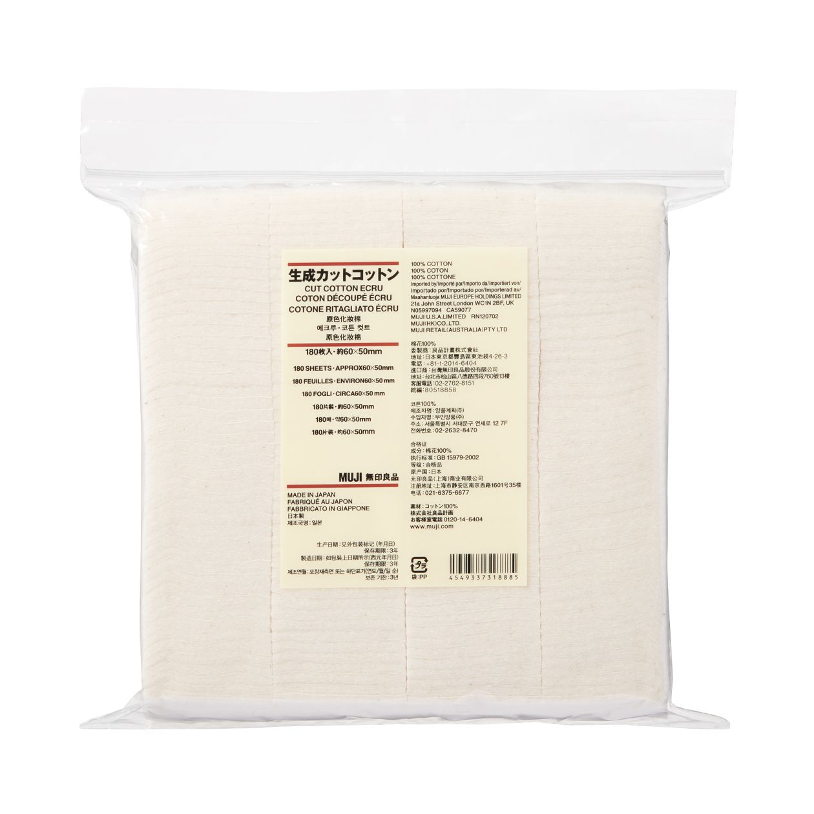

第一章：化妆基础入门
化妆的重要性
化妆不仅是一门技术，更是一种自我提升和表达的艺术。合适的妆容能让您在各种场合都倍感自信。
化妆的意义
- 提升精神面貌，展现专业形象
- 修饰面部瑕疵，突出个人优点
- 根据场合调整妆容，展现不同魅力
- 培养审美能力，提升生活品质
基础工具介绍

底妆工具
- 粉底刷/美妆蛋：服帖上妆
- 散粉刷：定妆必备
- 腮红刷：精准上色

眼部工具
- 眼影刷套装：晕染必备
- 眼线刷：精细勾勒
- 睫毛夹：塑造卷翘

辅助工具
- 化妆棉：清洁必备
- 双眼皮贴：改善眼型
- 粉扑：补妆神器
护肤基础知识
了解自己的肤质，选择合适的护肤方案，为化妆打好基础
肤质类型
油性肤质
特征表现
- T区易出油，毛孔粗大
- 皮肤容易泛光发亮
- 容易长痘痘和黑头
- 妆容容易脱妆
护理建议
- 选择控油型护肤品
- 使用水杨酸类产品控油
- 定期使用清洁面膜
- 底妆前使用控油妆前乳
化妆注意事项
- 底妆前使用控油妆前乳
- 选择哑光型粉底液
- 重点部位可使用定妆粉
干性肤质
特征表现
- 皮肤容易干燥紧绷
- 毛孔细小不明显
- 易出现细纹和脱屑
- 底妆容易起皮卡粉
护理建议
- 使用温和保湿型产品
- 添加玻尿酸精华补水
- 晚上可使用面油滋养
- 注意防晒避免水分流失
化妆注意事项
- 底妆前充分保湿
- 选择滋润型粉底液
- 避免过度使用粉质产品
混合性肤质
特征表现
- T区偏油，两颊偏干
- 不同区域需求不同
- 季节变化影响明显
- 护理难度较大
护理建议
- 分区护理，油性区域控油
- 干性区域注重保湿
- 选择温和平衡型产品
- 根据季节调整护理方案
化妆注意事项
- T区使用控油妆前乳
- 两颊注重保湿打底
- 可混合使用不同质地底妆
敏感性肤质
特征表现
- 容易泛红发痒
- 对外界刺激反应强烈
- 皮肤易起红疹
- 护肤品适应性差
护理建议
- 选择无刺激性产品
- 避免使用香精和酒精
- 新产品需要做斑贴测试
- 保持肌肤屏障健康
化妆注意事项
- 选择温和无刺激底妆
- 避免使用含酒精产品
- 建议使用矿物质彩妆
化妆基本步骤
完整化妆步骤指南，按顺序操作轻松上手
基础护理步骤
- 1. 清洁面部
- 2. 爽肤水/化妆水
- 3. 精华液
- 4. 乳液/面霜
- 5. 防晒霜
- 6. 妆前乳/隔离
底妆步骤
- 1. 遮瑕（黑眼圈、痘印）
- 2. 粉底液/气垫
- 3. 散粉定妆
- 4. 修容（可选）
- 5. 腮红
- 6. 高光（可选）
眼部妆容
- 1. 眼部打底
- 2. 眼影
- 3. 眼线
- 4. 睫毛夹翘
- 5. 睫毛膏
- 6. 眉毛修饰
最后点缀
- 1. 唇部打底
- 2. 唇线笔勾勒
- 3. 口红/唇釉
- 4. 定妆喷雾